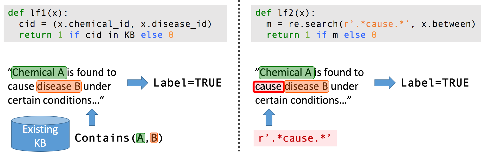
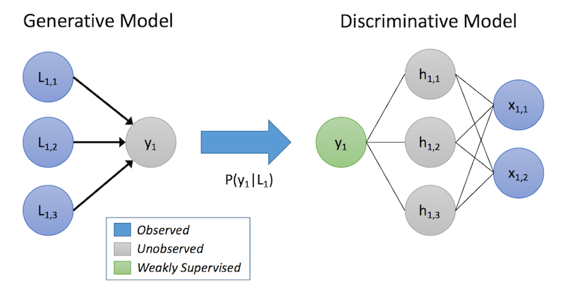
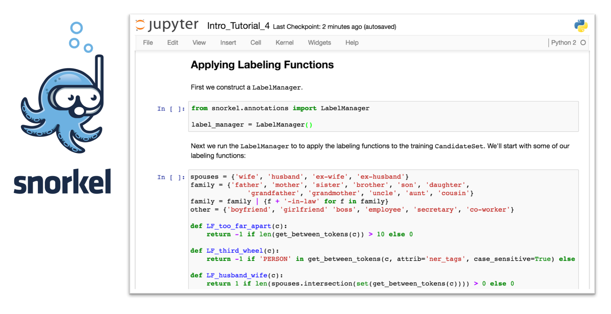

Data Programming:
Machine Learning with Weak Supervision
Post by Alex Ratner, Stephen Bach and Chris Ré
And referencing work by many other members of Hazy Research
With the rise of automated feature generation techniques like deep learning, training data is now the critical bottleneck in machine learning.
Collecting hand-labeled training data is not an option for most real-world applications.
Users can programmatically create lower quality training data to weakly supervise their models.
We can use generative models to denoise this noisy training data, resulting in competitive performance without any hand-labeled training data!
We describe our new data programming approach (NIPS 2016), and our new open-source framework for training data creation and management, Snorkel, which we use to beat both directly-supervised and distant supervision-based systems on information extraction tasks.

Modern ML models require large amounts of task-specific training data, and creating these labels by hand is often too slow, static and expensive.
Deep learning models have become omnipresent in the field of machine learning primarily because they automate the onerous task of selecting or engineering features. However, especially as they become deeper and more complex, they require massive training sets, and collecting this training data has increasingly become the development bottleneck. Data may once have been the "new oil," but for machine learning practitioners, labeled training data is the new scarce commodity.
A cursory look at the internet (or a random machine learning paper) might hide the prevalence of this problem. It has never been easier to download a training dataset, spin up a convnet, and start creating your own dreaming, painting, image-classifying AI; indeed, vast repositories of curated training data exist, like Imagenet, to help you classify everything from cats vs. dogs to hot dogs vs. water dogs.
However, as soon as you stray from stable benchmark tasks into the realm of real world applications, a different picture emerges. Most applications "in the wild" are dynamic, require domain expertise, and need to be rapidly developed; so manually labeling large training sets is not a feasible option. Indeed, even when we’ve had conversations with organizations that can afford to deploy fleets of cars or new hospital system infrastructures to collect data, the difficulty they have in labeling enough of this data still always comes up!
In our current work, we aim to raise the level of abstraction at which humans supervise machine learning systems, by allowing users to label training data programmatically, rather than by hand. Generating more training data in this way may not solve everything, but to quote Sarah Palin, "The fact that drilling won't solve every problem is no excuse to do nothing at all." [1]
For many tasks, we can leverage various heuristics and existing datasets as weak supervision. We can express these various signals in one unifying framework: as functions which label data.
For many tasks that we'd want to apply machine learning to, there are various ways that we can programmatically generate training data using heuristics, rules-of-thumb, existing databases, ontologies, etc. We call the resulting training data weak supervision: it isn't perfectly accurate, and possibly consists of multiple distinct signals that overlap and conflict. Like crude oil, though, it can be extracted, refined, and used just as effectively.
Examples that can be thought of as sources of weak supervision include:
Domain heuristics (e.g. common patterns, rules of thumb, etc.)
Existing ground-truth data that is not an exact fit for the task at hand, but close enough to be useful (traditionally called "distant supervision")
"Weak" or biased classifiers (a la traditional “boosting”)
Unreliable non-expert annotators (e.g. crowdsourcing)
In our recent NIPS 2016 paper, we describe data programming, a simple but powerful approach in which we ask domain expert users to encode these various weak supervision signals as labeling functions, which are simply functions that label data, and can be written in standard scripting languages like Python. These labeling functions can be noisy, and can overlap and conflict; we reconcile and denoise them automatically, and then use them to train a discriminative model of interest.
Domain experts can often supply a variety of weak supervision patterns and data resources that we can effectively utilize as a substitute for hand-labeled data.
Extracting structured information from the biomedical literature is one of the applications that motivates us most: volumes of useful information are effectively locked away in the dense unstructured text of millions of scientific articles. We'd like to extract it all using machine learning, so that our bio-collaborators could use it to do things like diagnose genetic diseases and accelerate pharmacogenomics research.
Consider the task of extracting mentions of a certain chemical-disease relationship from the scientific literature. We may not have a large enough (or any) labeled training dataset for this task. However, in the biomedical space there is a profusion of curated ontologies, lexicons, and other resources, which include various ontologies of chemical and disease names, databases of known chemical-disease relations of various types, etc., which we can use to provide weak supervision for our task. In addition, we can come up with a range of task-specific heuristics, regular expression patterns, rules-of-thumb, and negative label generation strategies with our bio-collaborators.

Two simple example labeling functions (written in Python) for extracting mentions of chemical-induced disease relations from the scientific literature; lf1 leverages an existing curated ontology, while lf2 uses a heuristic pattern.
One way of thinking about this new approach is that instead of asking annotators to directly label data points, we are asking them to describe a process of labeling data, which utilizes various resources or heuristics. This description comes as a set of labeling functions which have arbitrary (greater than random) accuracy and may overlap and conflict. How then do we reconcile, denoise, and utilize them for training our model? In fact, we've been using forms of weak supervision for a while now, but now we want to use it more easily, flexibly, and on better statistical footing.
We can interpret our weak supervision as describing a generative model, and use this to automatically reconcile and denoise the training labels we generate.
In our data programming approach, we consider the labeling functions as implicitly describing a generative model. To give a quick refresher: Given data points x, having unknown labels y that we want to predict, in a discriminative approach we model P(y|x) directly, while in a generative approach we model P(x,y) = P(x|y)P(y).
In our case, we're modeling a process of training set labeling, P(L,y), where L are the labels generated by the labeling functions for objects x, and y are the corresponding (unknown) true labels. By learning a generative model, and directly estimating P(L|y), we are essentially learning the relative accuracies of the labeling functions based on how they overlap and conflict (note, we don't need to know y!)

A toy schematic of our data programming approach: User-written labeling functions label some subset of our data, which we treat as implicitly defining a generative model. We then use the predictions of this model to train a discriminative model, e.g. a neural network
In our data programming approach, we use this estimated generative model over the labeling functions to train a noise-aware version of our end discriminative model. To do so, the generative model infers probabilities over the unknown labels of the training data, and we then minimize the expected loss of the discriminative model with respect to these probabilities.
Estimating the parameters of these generative models can be quite tricky, especially when there are statistical dependencies between the labeling functions used (either user-expressed or inferred). In the case of data programming however, we can show that given enough labeling functions, we can get the same asymptotic scaling as with supervised methods (except in our case, of course, with respect to unlabeled data). As for handling scale, we're able to rely on some of our lab members' award-winning work on asynchronous Gibbs sampling and the like.
Recently, both generative models, and pairings of generative and discriminative models, have been getting increased attention more broadly. For example, Generative Adversarial Nets (GANs) are one example of a generative-discriminative pair, wherein the training process is a minimax game where the generative model attempts to "trick" a discriminative model into mistaking its output for labeled training data.
Our approach is fundamentally different in that we view the generative model as a vehicle for expressing a data generation process which we want a discriminative model to learn from. In our current work, the generative model is implicitly defined by a set of labeling functions. However, we see this as part of a broader push towards "Observational ML," where any actions a user takes will be passively compiled into a generative model, to use as training signal. We can look ahead to a future where all the “exhaust” generated by a user during development--e.g. every time someone changes their script, or subselects data--can be fed into a generative model, and used as training data!
Recently, we've open-sourced a new lightweight platform for information extraction using data programming, called Snorkel. Snorkel is designed for a Jupyter notebook interface, so that users can rapidly develop their own task- and domain-specific labeling functions.
 In this screenshot from the introductory tutorial, users write simple labeling functions for extracting mentions of spouse relationships from news articles.
So far, Snorkel seems to be convenient and intuitive for users, as we outlined in a workshop paper at HILDA 2016 (back when it was called DDLite). More recently, as another example, we were able to come within 1 point F1 score of a benchmark for disease tagging without using any hand-labeled data, and have released this as one of our tutorial examples.
Some other things we’re currently excited about working on, in the more near term, in no particular order:
We recently collaborated with some bio-friends to beat human pathologists at some lung cancer prognosis prediction tasks. We’d like to extend this result to other tasks and domains where there is less training data.
More generally, we’re excited to work on images, and multi-modal tasks involving images, text, tables, time-series, etc.
We aim to make the process of creating labeling functions even easier for users, especially non-computer scientists. We are exploring techniques for automatically suggesting new labeling functions to complement a user’s existing ones.